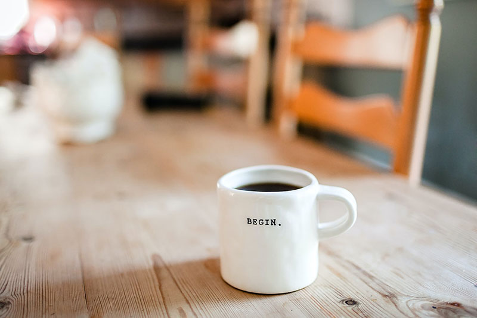

C:\COFFEE.POT missing (A)bort (R)etry (F)all asleep?
Coffee is a brewed drink prepared from roasted coffee beans, the seeds of berries from certain Coffea species. When coffee berries turn from green to bright red in color – indicating ripeness – they are picked, processed, and dried. Dried coffee seeds (referred to as "beans") are roasted to varying degrees, depending on the desired flavor. Roasted beans are ground and then brewed with near-boiling water to produce the beverage known as coffee.
Coffee is darkly colored, bitter, slightly acidic and has a stimulating effect in humans, primarily due to its caffeine content. It is one of the most popular drinks in the world, and can be prepared and presented in a variety of ways (e.g., espresso, French press, caffè latte, or already-brewed canned coffee). It is usually served hot, although chilled or iced coffee is common. Sugar, sugar substitutes, milk or cream are often used to lessen the bitter taste.
I’m going to start measuring the complexity of coding tasks in coffee cups. “This was a five-espresso algorithm."
Clinical research indicates that moderate coffee consumption is benign or mildly beneficial as a stimulant in healthy adults, with continuing research on whether long-term consumption reduces the risk of some diseases, although some of the long-term studies are of questionable credibility.
The earliest credible evidence of coffee-drinking as the modern beverage appears in modern-day Yemen in southern Arabia in the middle of the 15th century in Sufi shrines where coffee seeds were first roasted and brewed in a manner similar to how it is now prepared for drinking. The Yemenis procured the coffee beans from the Ethiopian Highlands via coastal Somali intermediaries, and began cultivation. By the 16th century, the drink had reached the rest of the Middle East and North Africa, later spreading to Europe.
The two most commonly grown coffee bean types are C. arabica and C. robusta. Coffee plants are now cultivated in over 70 countries, primarily in the equatorial regions of the Americas, Southeast Asia, the Indian subcontinent, and Africa. As of 2018, Brazil was the leading grower of coffee beans, producing 35% of the world total. Coffee is a major export commodity as the leading legal agricultural export for numerous countries. It is one of the most valuable commodities exported by developing countries. Green, unroasted coffee is one of the most traded agricultural commodities in the world. The way developed countries trade coffee with developing nations has been criticised, as well as the impact on the environment with regards to the clearing of land for coffee-growing and water use. Consequently, the markets for fair trade and organic coffee are expanding.
Espresso
Espresso is a form of concentrated coffee that is usually served as shots. All espresso based drinks have three common ingredients: espresso, steamed milk and foam. The process of making espresso is called pulling a shot in which hot water is pressurized and poured over finely grounded coffee beans. All espresso have cream in them which is the froth over it in brownish-red color and gives the rich flavor and smell to the coffee.
Cafe Latte
Cafe latte is made with espresso and steamed milk of which, one third is espresso and two third is steamed milk and also consists of at least a centimeter of foam. It is an Italian coffee-based drink that is now enjoyed by people worldwide and is similar to the French drink cafe au lait. In Italian, cafe latte means coffee and milk, which defines the purpose of how it is prepared.
Frappuccino
Frappuccino is a signature drink of Starbucks but is now available in almost all local coffee shops. The essential ingredients in a frappuccino are ice, espresso, whole milk, and flavored syrup. It takes somewhere between 5 to 10 minutes to prepare it. The best part about this drink is that it is topped with a large and thick whipped cream, adding the right amount of sweetness to this drink.
Can't Wake Up Without It
"Whether you call it joe, java, cuppa, liquid energy, or brew, if you are part of the 62% of Americans who drink coffee on a daily basis, that first morning cup sets the tone for the rest of your day. A good cup of coffee is a thing of beauty – hot but not scalding, slightly bitter without pucker, and wafting an aroma that draws even the deepest sleeper from his bed."
My Drink of Choice
"All of these questions are enough enough to make you want to reach for … well, a cup of coffee. Luckily, we’ve performed the coffee research for you. We reviewed the best advice from top experts as well as feedback from coffee drinkers in general. The recommendations above and buying guide below will help simplify your quest for the best-tasting cup of home-brewed coffee."
I have measured out my life with coffee spoons.